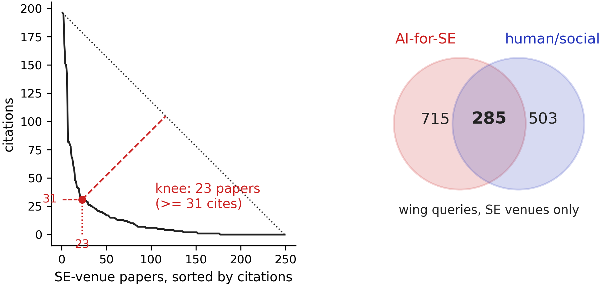
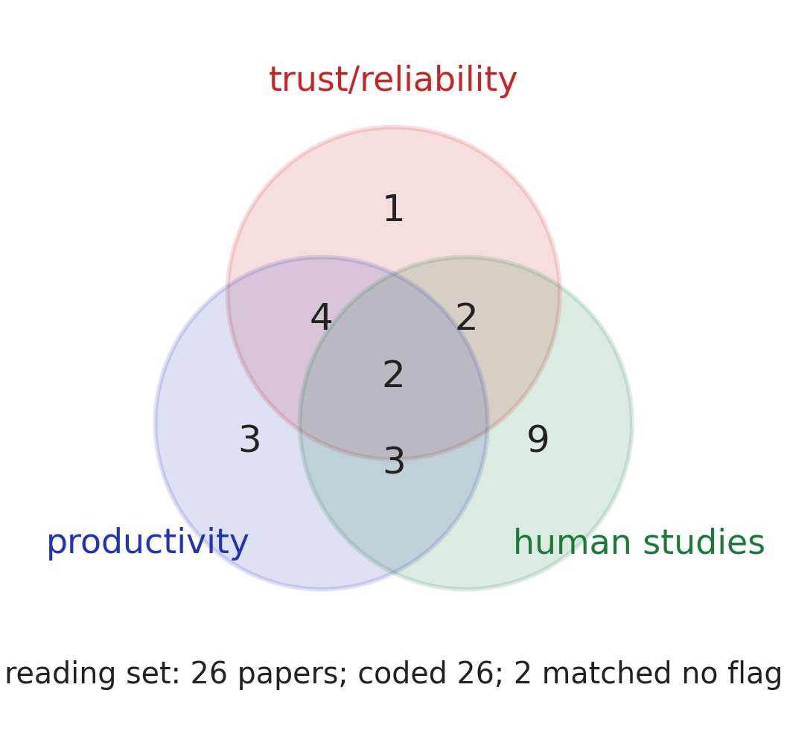

A topic chosen is a literature owed.
The move. The whole lit review runs off one prompt whose first three lines are machine-read configuration (goal, years, seeds) and whose rules fit in a box:

Left: the sorted-cites curve of the goal query, searched
within SE venues only; the dashed drop marks the knee — read
everything above it. Right: the two wings as separate queries, and
their overlap. Regenerate: litfig.py.
Why the venue rule earned its place, twice. A first draft skipped it: the reading set filled with general-AI blockbusters (an ML survey, the GPT-4 report, a metaverse position paper). A second draft filtered after a citation-sorted fetch: of the top 1,000 hits, only nine sat in SE venues — mega-cited outsiders crowd out the field before the filter runs. So the venue list joins the query itself, and human hours go only to papers the field would recognize.
Findings about the process itself. Full texts are scarce (41% of chased PDFs downloadable; abstracts come easier). Google Scholar is closed to scripts; OpenAlex, Semantic Scholar, and arXiv answer gladly — build on the willing. Abstract-only coding missed about half the topic flags, so code full text above the knee. And the own-papers rule pays: list which of the team's papers already sit inside the set — territory adjacent to you, not yet occupied by you. Coding the set against topic flags then exposes the empty overlap — the under-researched corner the paper writes toward:

The reading set coded against three topic flags (trust, productivity, human-method). The nearly-empty three-way overlap is the target the paper writes toward.
The knob. Edit the query strings, VENUES, and
FLAGS in litfig.py, delete the cache, rerun;
figures, table, and every number regenerate.
Combines with: 2 — map team to field nominates the goal line; 4 — write to a grammar gives the review its respect-then-disrespect shape; 8 — keep the receipts extends “never silently drop” to the whole paper.